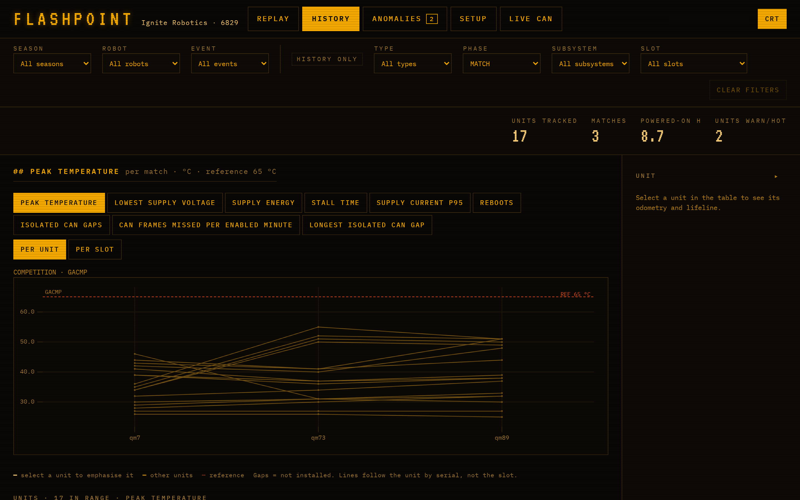
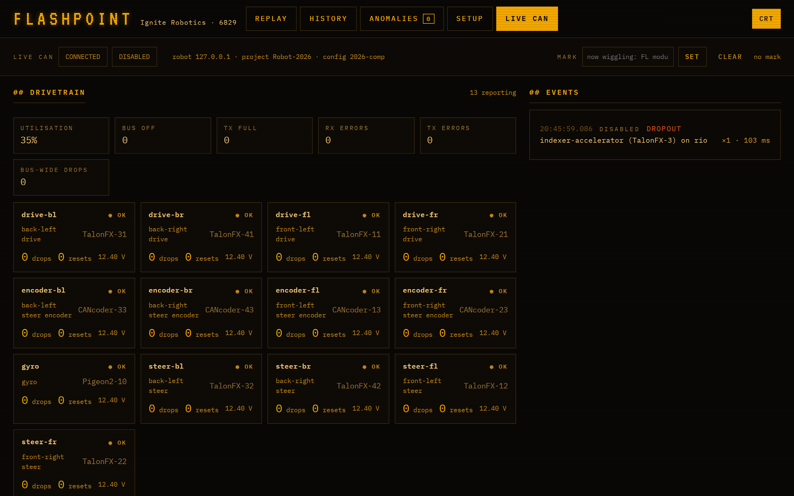

Why Flashpoint¶
Every FRC season has these three stories: - The motor that died in eliminations. It had been running hotter for weeks, and the logs show it, but nobody had time to graph forty matches. - The CAN dropout nobody could find. A device falls off the bus for a few hundred milliseconds, the mechanism twitches, and by the time anyone looks, the robot is fine. - The brownout in autonomous. The robot stops for half a second in auto, and the drive team swears they didn't touch anything.
Your robot already recorded what happened in each of them. Flashpoint reads those logs, keeps every match, and shows you each motor's health across the robot's whole life.
What sets it apart¶
It follows the motor, not the CAN ID¶
When a motor is swapped onto another mechanism, or moved to the practice robot, its history goes with it. Flashpoint follows each physical motor by its CTRE serial number, when robot code logs its CAN inventory. Without the inventory, it follows each position on the robot (a slot), and you mark swap dates in the robot file. How it works has the details.

It keeps the robot's whole life¶
History puts every match in the lake on one chart: peak temperature, supply current, energy, stall time or CAN gaps, one line per motor, across matches, events and seasons. A motor that runs hotter than it used to, or draws more than its twin on the other side of the drivetrain, stands out. Temperature needs Phoenix Pro on the device; current and CAN gaps don't. See the History view.
It shows each match on one timeline¶
Replay lines up battery voltage, current and temperature for one match, with a marker wherever a rule fired: temperature limits, brownouts and sags, stalls, device reboots, CAN dropouts, and whole-bus gaps. Click a marker to see the motor and the moment. Brownouts are judged on a battery proxy (the supply voltage the CTRE devices report), because Flashpoint doesn't read the PDH or PDP yet. See the Replay view.

It flags anomalies (beta), with the evidence¶
Anomaly detection (beta) checks each match against fixed limits, each motor's own history, and its siblings (the four drive motors, say). It flags a match over a temperature limit or with a brownout, a metric that creeps away from its usual value over several matches or jumps and stays there (such as a loosening connector raising supply path resistance), and a motor that leaves its sibling group. Each anomaly (beta) comes with its evidence and a list of likely causes to check, and the team triages it: someone is looking into it, it's fixed, or it's expected. The note is shown next time the same thing turns up on that motor. Detection is tuned on one team's robots so far, so treat a finding (beta) as a reason to check, not a verdict. See Triage an anomaly (beta).

It finds loose CAN connectors in the pit (Live CAN, experimental)¶
Live CAN (experimental) watches the robot while you shake-test it: wiggle each harness and see which device drops out, reboots or faults, and whether it was one device or the whole bus. It needs a small publisher in robot code, and it can show false dropouts on a fast bus. See Live CAN health (experimental).

It runs offline on a pit laptop¶
No account, no server of ours, and no telemetry. Once the converter for your hoots is downloaded, Flashpoint makes no connection beyond the laptop, and a test checks that. Privacy and network lists every connection it can make. It runs on macOS, Linux and Windows (Install).
It reads the logs you already record¶
Turn on CTRE signal logging (.hoot) and the WPILib DataLog (.wpilog), and Flashpoint has what it needs. A few extra lines of robot code (the CAN inventory, CAN bus status) let it do more; Robot side says what each one adds, with Java samples that compile.
It opens AdvantageScope instead of replacing it¶
When you need every frame of one log, Replay's OPEN IN ADVANTAGESCOPE opens the match's wpilog there, with the hoots in the same folder. Flashpoint is for the view across matches; AdvantageScope is for the deep dive. See Open a match in AdvantageScope.
It's free and open source¶
BSD 3-Clause (license). Built by FRC team 6829, Ignite Robotics, and open to contributions.
What it doesn't do (yet)¶
- REV and Phoenix 5 devices aren't supported. Flashpoint reads Phoenix 6 devices from their hoots (#108 tracks REV, #109 Phoenix 5).
- No PDH or PDP. Battery voltage comes from a proxy (#6).
- No temperature without Phoenix Pro. Free hoots don't carry it (#75).
- Hoots alone give no motor history. A session needs its wpilog too (Hoots without a wpilog).
- Tested on one team's robots. AdvantageKit logs, other teams' wiring and devices Ignite doesn't run read "not tested" until someone's logs show them working.
- 2027 and Systemcore need a later version; see The 2027 season and Systemcore.
The support matrix lists every device, log setup and platform with how it was tested, and Known limits has the rest.
See it for yourself¶
- The hosted demo is Replay in your browser, on real matches from team 6829's robots. Nothing to install.
- The Quickstart installs Flashpoint and gets your own match into Replay with three commands, or tries it on a sample match first.